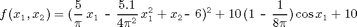
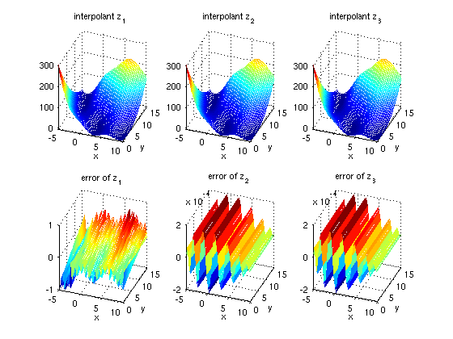

spvals
Construct a sparse grid interpolant.Syntax
Z = spvals(FUN,D)Z = spvals(FUN,D,RANGE)Z = spvals(FUN,D,RANGE,OPTIONS)Z = spvals(FUN,D,RANGE,OPTIONS,P1,P2, ...)
Description
Z = spvals(FUN,D) Compute the sparse grid representation Z for multi-linear sparse grid interpolation of the function FUN. The grid is computed over the d-dimensional unit cube [0,1]^D.
Z = spvals(FUN,D,RANGE) In addition to the syntax above, the
interpolation box dimensions may be specified. RANGE is a 2xD array, e.g. to compute the sparse grid representation over the domain [0,1]x[2,4]x[1,5] of FUN, RANGE must be [0 1; 2 4; 1 5]. If RANGE is empty (=[]), it is assumed to be [0,1]^D.
Z = spvals(FUN,D,RANGE,OPTIONS) Computes the sparse grid representation as above, but with default interpolation properties replaced by values in OPTIONS, an argument created with spset.
Z = spvals(FUN,D,RANGE,OPTIONS,P1,P2, ...) passes the parameters P1,P2,... to the objective function FUN.
Examples
The following examples demonstrate the generation of sparse grid interpolants under a variety of different parameters. The extensive configurability of spvals is achieved via the spset function. Additional examples of constructing interpolants of external functions, models with several output parameters, ODEs, etc. are provided in the advanced topics section.We first define the test function. In the examples below, we use Branin's test function:

We set the dimension to d = 2, and the interpolation domain to range = [-5,10; 0,15].
fun = inline(['(5/pi*x-5.1/(4*pi^2)*x.^2+y-6).^2 + ' ... '10*(1-1/(8*pi))*cos(x)+10']); d = 2; range = [-5, 10; 0, 15];
Now, we compute a regular (i.e. non-adaptive) sparse grid interpolant of fun using the default settings of the Sparse Grid Interpolation toolbox. This will compute a piecewise linear interpolant at the Clenshaw-Curtis sparse grid.
z1 = spvals(fun, d, range)
z1 =
vals: {[145x1 double]}
gridType: 'Clenshaw-Curtis'
d: 2
range: [2x2 double]
maxLevel: 5
estRelError: 0.0087
estAbsError: 2.6622
fevalRange: [1.3697 308.1291]
minGridVal: [0.1250 0.7500]
maxGridVal: [0 0]
nPoints: 145
fevalTime: 0.2437
surplusCompTime: 0.0040
indices: [1x1 struct]
For comparison, we now compute two additional interpolants, one being a regular Chebyshev-Gauss-Lobatto grid, the other one being a dimension-adaptive sparse grid interpolant of the same grid type. To do this, we must pass an according options structure to the spvals routine. We do not have to store this options structure- it is possible to pass a structure generated on-the-fly to the function.
z2 = spvals(fun, d, range, spset('GridType', 'Chebyshev')) z3 = spvals(fun, d, range, spset('GridType', 'Chebyshev', ... 'DimensionAdaptive', 'on', ... 'DimAdaptDegree', 1, ... 'MinPoints', 20))
z2 =
vals: {[65x1 double]}
gridType: 'Chebyshev'
d: 2
range: [2x2 double]
maxLevel: 4
estRelError: 0.0095
estAbsError: 2.9017
fevalRange: [2.5620 308.1291]
minGridVal: [0.5000 0.2222]
maxGridVal: [0 0]
nPoints: 65
fevalTime: 0.1211
surplusCompTime: 0.0225
indices: [1x1 struct]
z3 =
vals: {[29x1 double]}
gridType: 'Chebyshev'
d: 2
range: [2x2 double]
estRelError: 0.0095
estAbsError: 2.9017
fevalRange: [2.7065 308.1291]
minGridVal: [0.5000 0.1464]
maxGridVal: [0 0]
nPoints: 29
fevalTime: 0.0468
surplusCompTime: 0.0094
indices: [1x1 struct]
maxLevel: [4 2]
activeIndices: [3x1 uint32]
activeIndices2: [9x1 uint32]
E: [1x9 double]
G: [9x1 double]
G2: [9x1 double]
maxSetPoints: 4
dimAdapt: 1
The following code generates a plot comparing the three interpolants. Furthermore, the error is plotted compared to the original function.
z = {z1, z2, z3};
for k = 1:3
f_z = @(x,y) spinterp(z{k}, x, y);
error_z = @(x,y) fun(x,y) - spinterp(z{k}, x, y);
subplot(2,3,k);
ezmesh(f_z, [range(1,:),range(2,:)]);
title(['interpolant z_' num2str(k)]);
view(20,30);
subplot(2,3,k+3);
ezmesh(error_z, [range(1,:),range(2,:)]);
title(['error of z_' num2str(k)]);
view(20,30);
end
 See Also
spinterp,
spset.